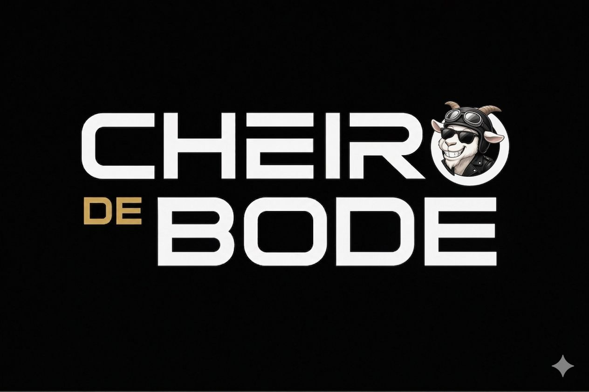

Atitude e Tradição

A Cheiro de Bode nasce para celebrar a tradição, a fraternidade e a autenticidade. Inspirada no universo maçônico e no espírito de irmandade, a marca desenvolve produtos exclusivos que unem qualidade, estilo e pertencimento.
Fale Conosco
Carlos Cezar Gonçalves da Rocha é advogado, professor, escritor, poeta e líder maçônico, com quase quatro décadas de atuação nas áreas jurídica, cultural e institucional.
Presidente da Academia Maçônica de Letras do Espírito Santo (AMLES), ocupa a Cadeira nº 5 da instituição e desenvolve expressiva atuação no incentivo à produção intelectual e à valorização da cultura maçônica.
Autor das obras Opúsculo – Volume I e Opúsculo – Volume II, possui vasta produção literária composta por artigos, ensaios, crônicas e poesias, acumulando mais de um milhão de acessos em plataformas digitais.
Motociclista e triciclista há mais de 17 anos, é fundador da Subsede Cariacica do Motoclube Bodes do Asfalto e é amplamente conhecido pelo pseudônimo "Cheiro de Bode".
Sua trajetória é marcada pelos valores da fraternidade, ética, tradição, cultura e compromisso com o desenvolvimento humano.